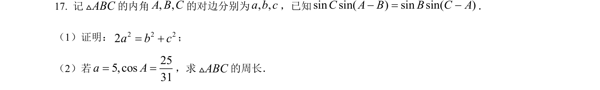
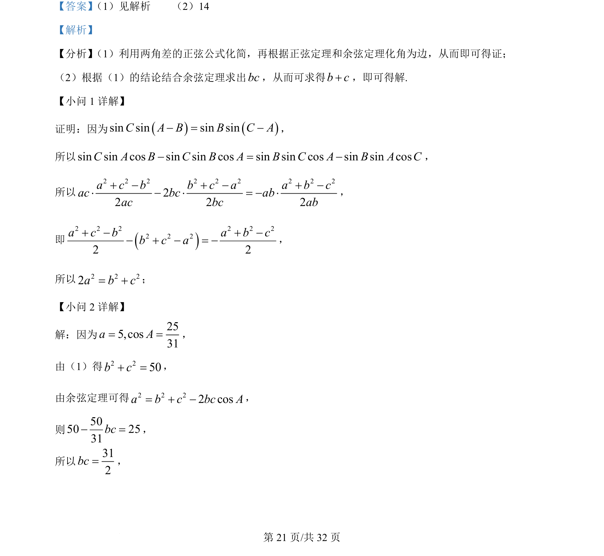
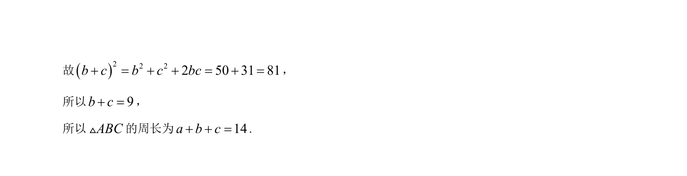

考点：正弦定理 余弦定理 三角恒等变换

本题考查利用正弦定理、余弦定理进行三角形边角互化证明与计算。


📄 原 PDF 第 21 页：
素材/真题/吉林/2008-2024·（吉林）数学高考真题/2022年高考数学试卷（理）（全国乙卷）（解析卷）.pdf
【答案】 （1）见解析 （2）14 【解析】 【分析】 （1）利用两角差的正弦公式化简，再根据正弦定理和余弦定理化角为边，从而即可得证； （2）根据（1）的结论结合余弦定理求出bc，从而可求得b c+，即可得解. 【小问 1 详解】 证明：因为sin sin sin sinC A B B C A- = -， 所以sin sin cos sin sin cos sin sin cos sin sin cosC A B C B A B C A B A C- = -， 所以 2 2 2 2 2 2 2 2 222 2 2a c b b c a a b cac bc abac bc ab+ - + - + -× - × = - ×， 即2 2 2 2 2 22 2 22 2a c b a b cb c a+ - + -- + - = -， 所以2 2 22a b c= +； 【小问 2 详解】 解：因为 255,cos31a A= =， 由（1）得2 250b c+ =， 由余弦定理可得2 2 22 cosa b c bc A= + -， 则5050 2531bc- =， 所以312bc=，